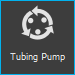
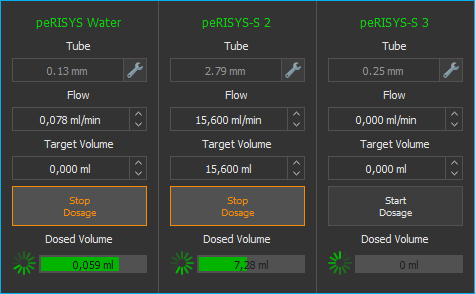
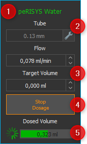
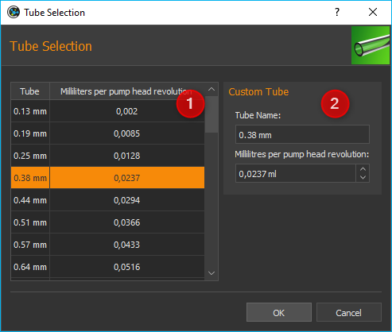
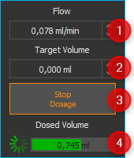
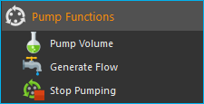
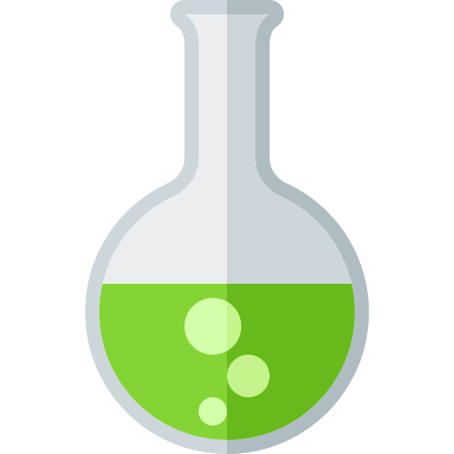
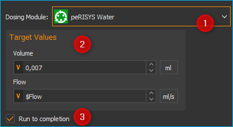
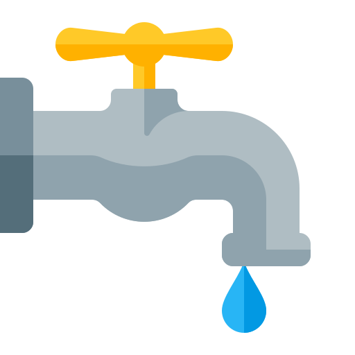
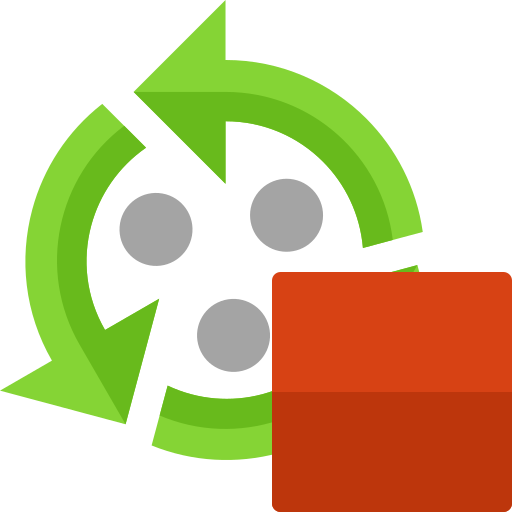

9. Tubing Pump Plugin
9.1. Introduction to Tubing Pump Plugin

Press the Tubing Pump button in the side bar to show the tubing pump view. The view shows the operating panels for all tubing pumps.

9.2. Tubing Pump Operating Panel
9.2.1. Operating Parameters

Pump Caption (customizable)
Tubing configuration (inner diameter)
Target value (flow rate, volume)
Start / stop dosing button
Activity and dosed volume indicators
9.2.2. Pump Caption
You can change the caption of each pump at any time to reflect the function or fluids of the respective pump. To change the caption label, directly click the description ❶ and type in the new name.
9.2.3. Tubing Configuration
The input box Tube ❷ shows the name of the currently configured tubing. Click on the wrench symbol right of the input area to change the tubing configuration. This will open the Tube Selection dialog (figure below).

In the Tube Selection dialog you can either choose from a list of available tubes ❶, or define your own tube in the Custom Tube section ❷.
To select an existing tube, simply click on it in the list ❶ and confirm the selection by clicking OK. In the list, the name of each tube is displayed in the first column (tube). The value in the second column (Milliliters per pumphead revolution) indicates how many milliliters are pumped during a complete revolution of the pump head.
If you want to configure your own tube, you can do this in the Custom Tube ❷ section. Enter a name for the tube and the millilitres that are pumped through this tube during one revolution of the pump head. Confirm the configuration by clicking OK.
9.3. Manual Dosing
Proceed as follows to configure a manual dosing task:

Enter your target flow rate in the Flow input box. A negative flow value causes a change in the rotating direction of the pump head. So you can switch between dispensing and aspiration by switching the sign of the entered flow value.
Now enter the volume to be dosed in the input box Target Volume. If you set the target volume to zero, the pump will be working in flow mode, i.e., the pump will work until manually stopped. A negative volume causes a change in the rotating direction of the pump head.
Start the pump by clicking Start Dosage and stop it by clicking the same button again.
The Dosed Volume info box will show the progress of the pumping process.
Tip
The software treats a dosing volume set to zero as unlimited continual flow. This is, once started, the pump will continue to operate until it is manually stopped by the user.
Tip
You can switch between dispensing and aspiration by switching the sign of the entered flow or volume value.
9.4. Script Functions
The plugin offers a number of script functions which can be used to program automatic sequences or for time-controlled dosing of liquids. The following script functions are available:

9.4.1. Pump Volume
{kind=link}

With this function, you can pump a specific volume at a precisely defined flow rate. You can set all the parameters in the configuration area, for example the dosing module ❶, the volume to be dosed, and the flow rate ❷.

You can also activate or deactivate the Run to completion ❸ parameter in the configuration area. When Run to completion is activated, the script execution is not continued until the complete volume has been dosed and the dosing process has ended. If this parameter is not active, the dosing is started, and then the next script function is executed immediately. This enables you, for example, to start a number of dosing modules almost simultaneously.
Tip
All the pump functions support the use of variables. That means, in all input fields marked with a coloured V in the script configuration panel (e.g. flow rate and volume) you can enter variables.
9.4.2. Generate Flow
{kind=link}

This function is used to generate a constant flow rate. In the configuration area, you can select the dosing module and set the flow rate. If the Run to completion parameter is active, the next script function is not executed until the module has stopped or reached one of the limit positions.
9.4.3. Stop Pumping
{kind=link}

You can immediately stop an active dosing process of a pump with this function.